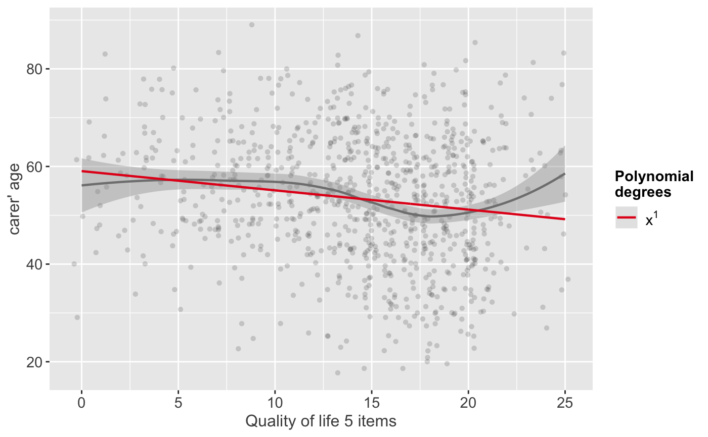
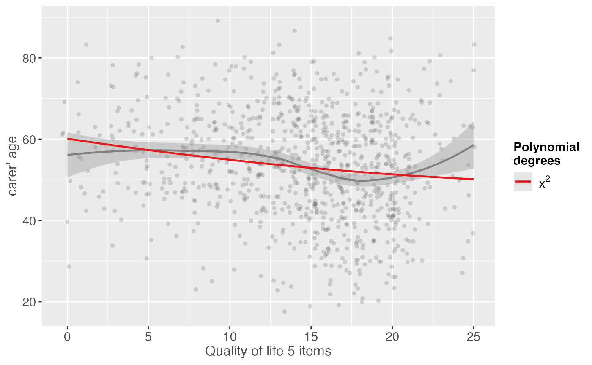
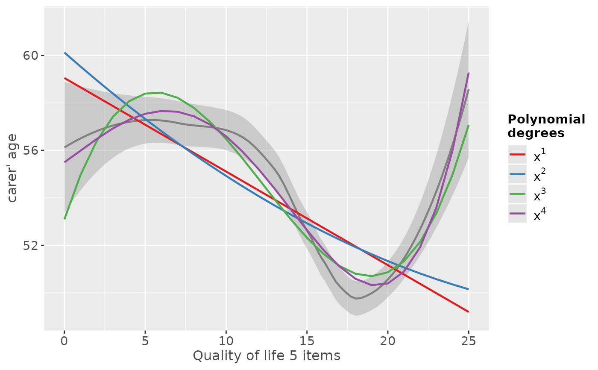
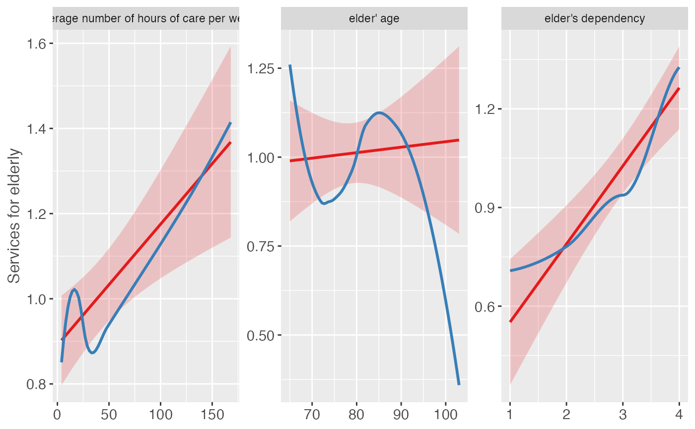
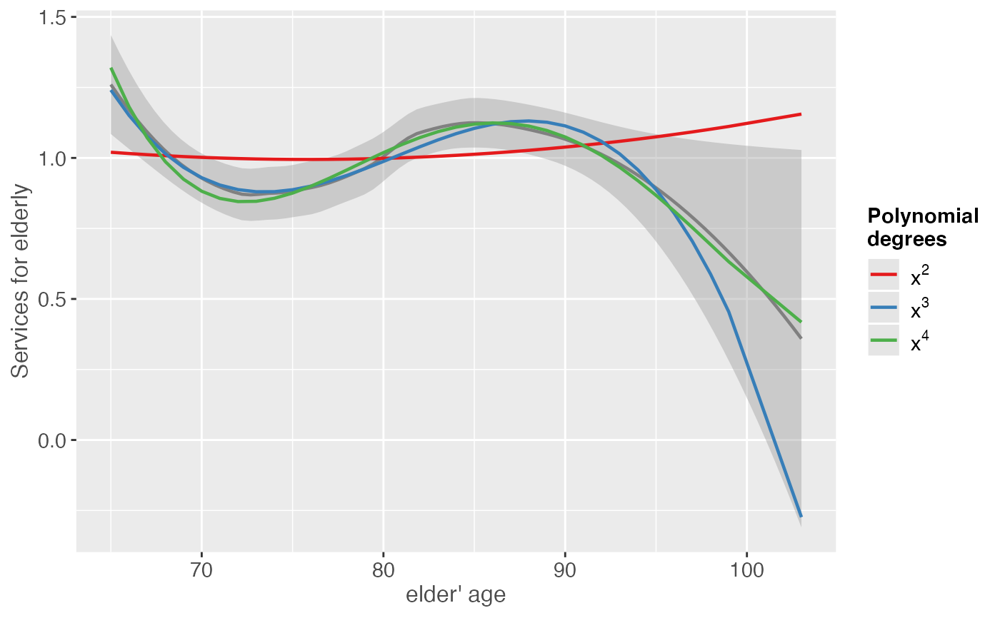

This function plots a scatter plot of a term poly.term
against a response variable x and adds - depending on
the amount of numeric values in poly.degree - multiple
polynomial curves. A loess-smoothed line can be added to see
which of the polynomial curves fits best to the data.
Usage
sjp.poly(
x,
poly.term,
poly.degree,
poly.scale = FALSE,
fun = NULL,
axis.title = NULL,
geom.colors = NULL,
geom.size = 0.8,
show.loess = TRUE,
show.loess.ci = TRUE,
show.p = TRUE,
show.scatter = TRUE,
point.alpha = 0.2,
point.color = "#404040",
loess.color = "#808080"
)Arguments
- x
A vector, representing the response variable of a linear (mixed) model; or a linear (mixed) model as returned by
lmorlmer.- poly.term
If
xis a vector,poly.termshould also be a vector, representing the polynomial term (independent variabl) in the model; ifxis a fitted model,poly.termshould be the polynomial term's name as character string. See 'Examples'.- poly.degree
Numeric, or numeric vector, indicating the degree of the polynomial. If
poly.degreeis a numeric vector, multiple polynomial curves for each degree are plotted. See 'Examples'.- poly.scale
Logical, if
TRUE,poly.termwill be scaled before linear regression is computed. Default isFALSE. Scaling the polynomial term may have an impact on the resulting p-values.- fun
Linear function when modelling polynomial terms. Use
fun = "lm"for linear models, orfun = "glm"for generalized linear models. Whenxis not a vector, but a fitted model object, the function is detected automatically. Ifxis a vector,fundefaults to"lm".- axis.title
Character vector of length one or two (depending on the plot function and type), used as title(s) for the x and y axis. If not specified, a default labelling is chosen. Note: Some plot types may not support this argument sufficiently. In such cases, use the returned ggplot-object and add axis titles manually with
labs. Useaxis.title = ""to remove axis titles.- geom.colors
user defined color for geoms. See 'Details' in
plot_grpfrq.- geom.size
size resp. width of the geoms (bar width, line thickness or point size, depending on plot type and function). Note that bar and bin widths mostly need smaller values than dot sizes.
- show.loess
Logical, if
TRUE, an additional loess-smoothed line is plotted.- show.loess.ci
Logical, if
TRUE, a confidence region for the loess-smoothed line will be plotted.- show.p
Logical, if
TRUE(default), p-values for polynomial terms are printed to the console.- show.scatter
Logical, if TRUE (default), adds a scatter plot of data points to the plot.
- point.alpha
Alpha value of point-geoms in the scatter plots. Only applies, if
show.scatter = TRUE.- point.color
Color of of point-geoms in the scatter plots. Only applies, if
show.scatter = TRUE.- loess.color
Color of the loess-smoothed line. Only applies, if
show.loess = TRUE.
Details
For each polynomial degree, a simple linear regression on x (resp.
the extracted response, if x is a fitted model) is performed,
where only the polynomial term poly.term is included as independent variable.
Thus, lm(y ~ x + I(x^2) + ... + I(x^i)) is repeatedly computed
for all values in poly.degree, and the predicted values of
the reponse are plotted against the raw values of poly.term.
If x is a fitted model, other covariates are ignored when
finding the best fitting polynomial.
This function evaluates raw polynomials, not orthogonal polynomials.
Polynomials are computed using the poly function,
with argument raw = TRUE.
To find out which polynomial degree fits best to the data, a loess-smoothed
line (in dark grey) can be added (with show.loess = TRUE). The polynomial curves
that comes closest to the loess-smoothed line should be the best
fit to the data.
Examples
library(sjmisc)
data(efc)
# linear fit. loess-smoothed line indicates a more
# or less cubic curve
sjp.poly(efc$c160age, efc$quol_5, 1)
#> Polynomial degrees: 1
#> ---------------------
#> p(x^1): 0.000
#>
#> `geom_smooth()` using formula = 'y ~ x'

# quadratic fit
sjp.poly(efc$c160age, efc$quol_5, 2)
#> Polynomial degrees: 2
#> ---------------------
#> p(x^1): 0.078
#> p(x^2): 0.533
#>
#> `geom_smooth()` using formula = 'y ~ x'

# linear to cubic fit
sjp.poly(efc$c160age, efc$quol_5, 1:4, show.scatter = FALSE)
#> Polynomial degrees: 1
#> ---------------------
#> p(x^1): 0.000
#>
#> Polynomial degrees: 2
#> ---------------------
#> p(x^1): 0.078
#> p(x^2): 0.533
#>
#> Polynomial degrees: 3
#> ---------------------
#> p(x^1): 0.012
#> p(x^2): 0.001
#> p(x^3): 0.000
#>
#> Polynomial degrees: 4
#> ---------------------
#> p(x^1): 0.777
#> p(x^2): 0.913
#> p(x^3): 0.505
#> p(x^4): 0.254
#>
#> `geom_smooth()` using formula = 'y ~ x'

# fit sample model
fit <- lm(tot_sc_e ~ c12hour + e17age + e42dep, data = efc)
# inspect relationship between predictors and response
plot_model(fit, type = "slope")
#> `geom_smooth()` using formula = 'y ~ x'
#> `geom_smooth()` using formula = 'y ~ x'
#> Warning: pseudoinverse used at 4.015
#> Warning: neighborhood radius 2.015
#> Warning: reciprocal condition number 1.5462e-16
#> Warning: There are other near singularities as well. 1

# "e17age" does not seem to be linear correlated to response
# try to find appropiate polynomial. Grey line (loess smoothed)
# indicates best fit. Looks like x^4 has the best fit,
# however, only x^3 has significant p-values.
sjp.poly(fit, "e17age", 2:4, show.scatter = FALSE)
#> Polynomial degrees: 2
#> ---------------------
#> p(x^1): 0.734
#> p(x^2): 0.721
#>
#> Polynomial degrees: 3
#> ---------------------
#> p(x^1): 0.010
#> p(x^2): 0.011
#> p(x^3): 0.011
#>
#> Polynomial degrees: 4
#> ---------------------
#> p(x^1): 0.234
#> p(x^2): 0.267
#> p(x^3): 0.303
#> p(x^4): 0.343
#>
#> `geom_smooth()` using formula = 'y ~ x'

if (FALSE) { # \dontrun{
# fit new model
fit <- lm(tot_sc_e ~ c12hour + e42dep + e17age + I(e17age^2) + I(e17age^3),
data = efc)
# plot marginal effects of polynomial term
plot_model(fit, type = "pred", terms = "e17age")} # }